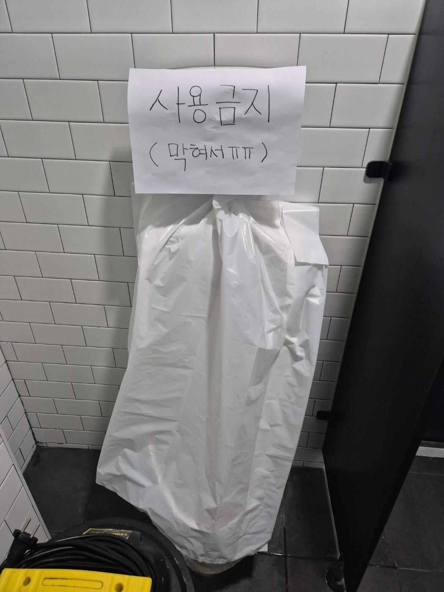
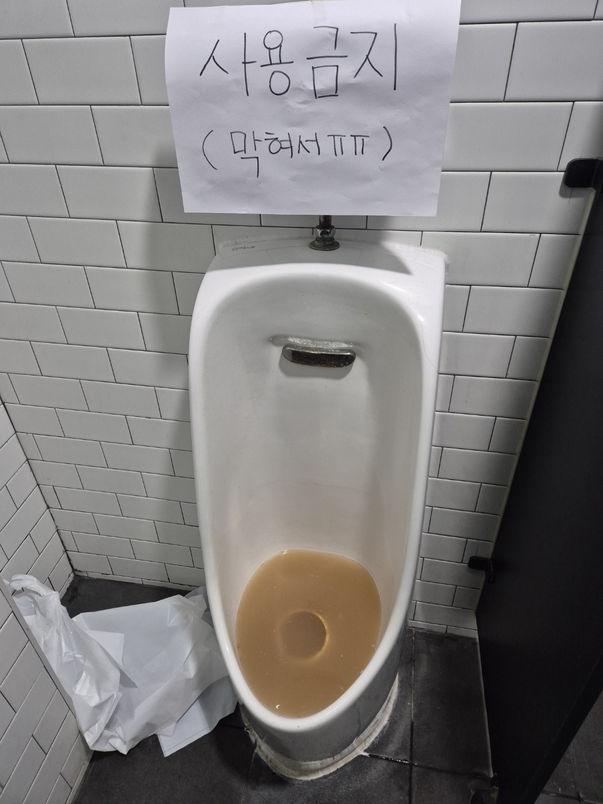
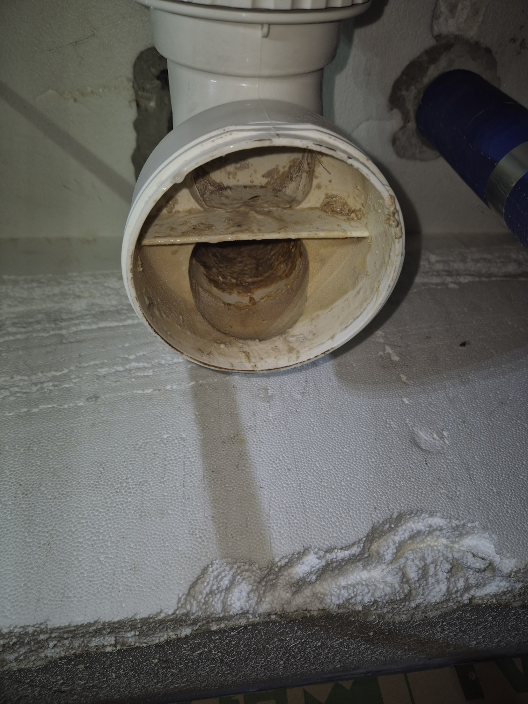
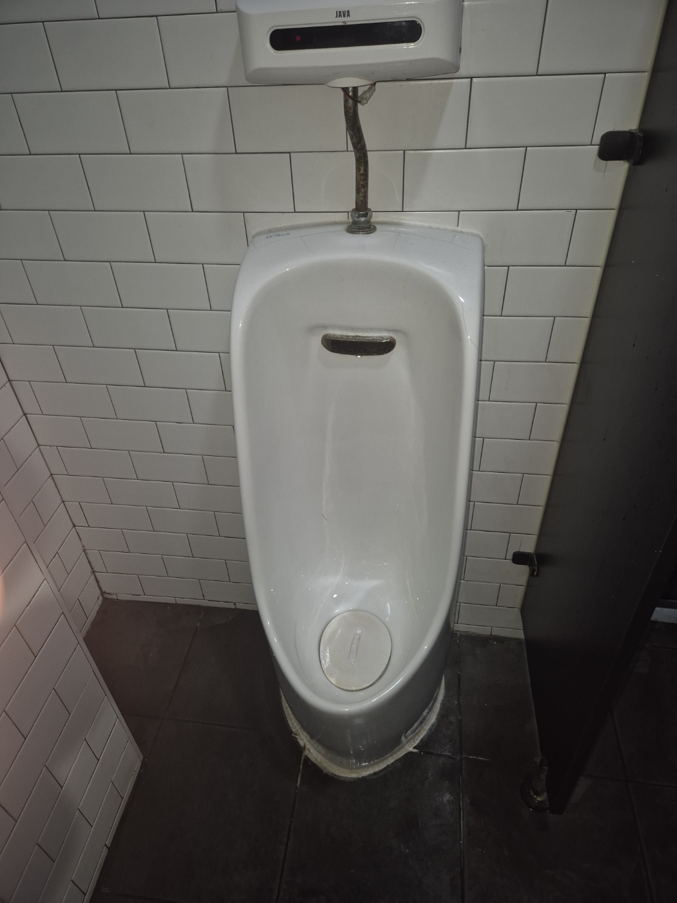
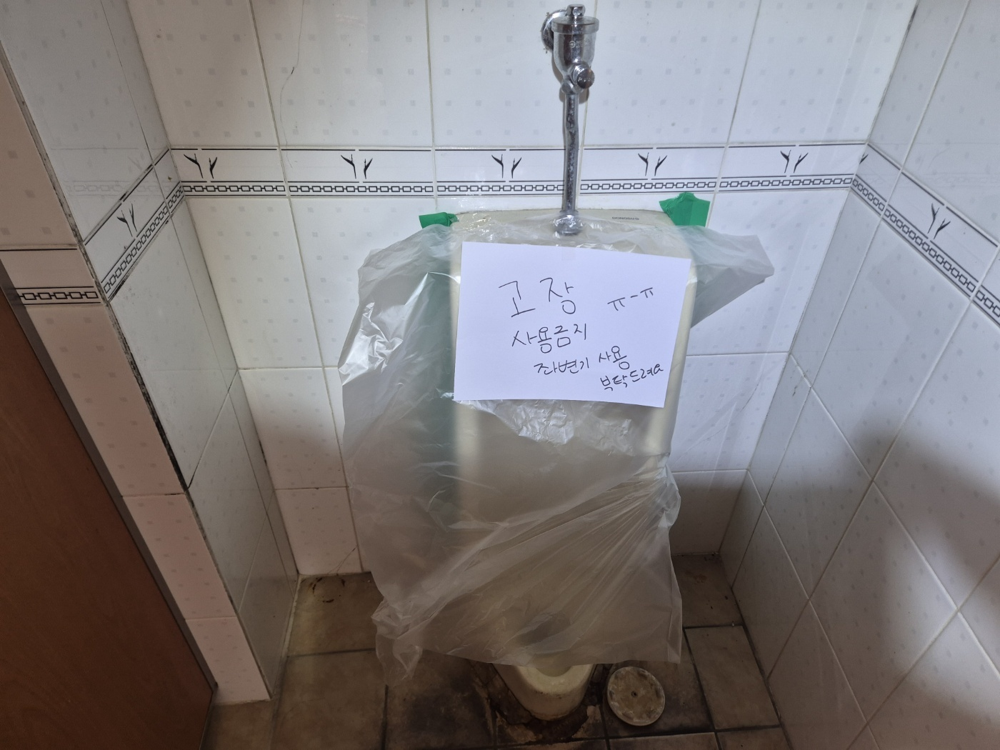
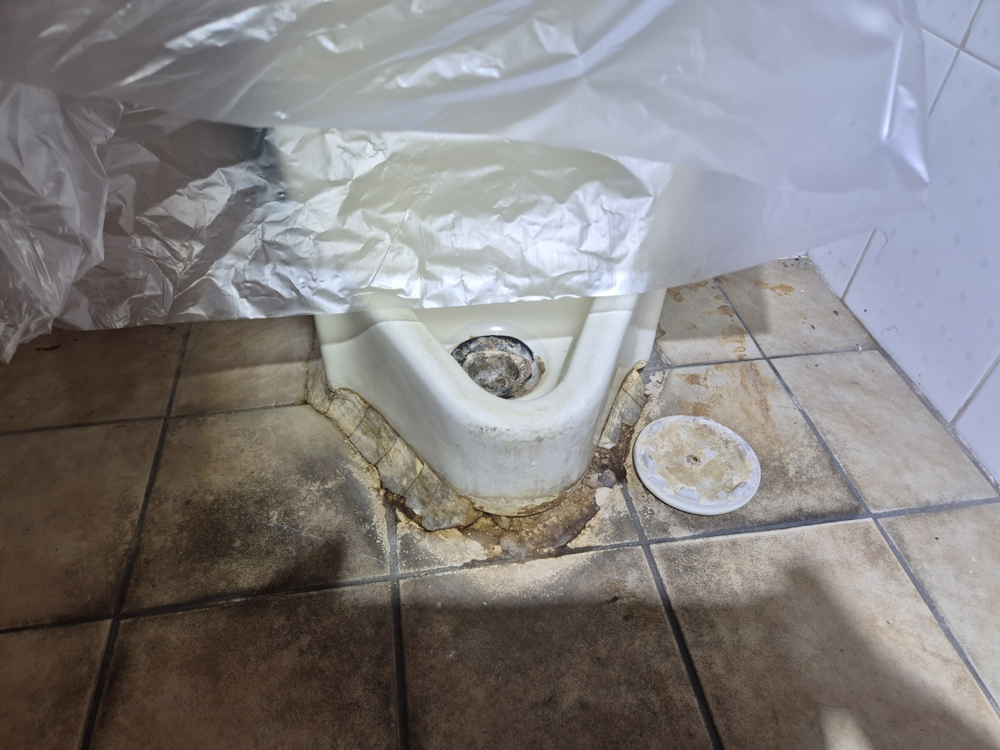
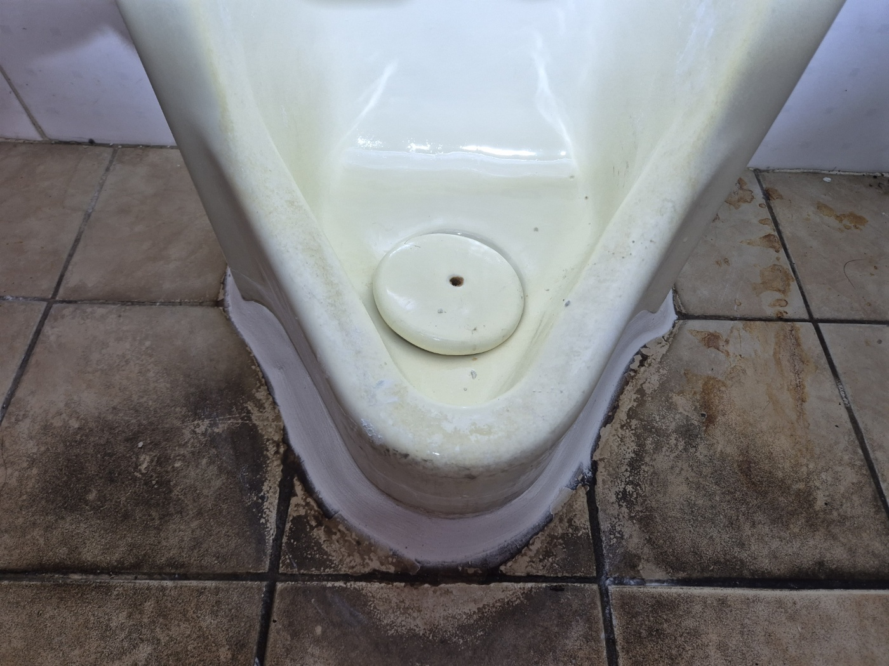
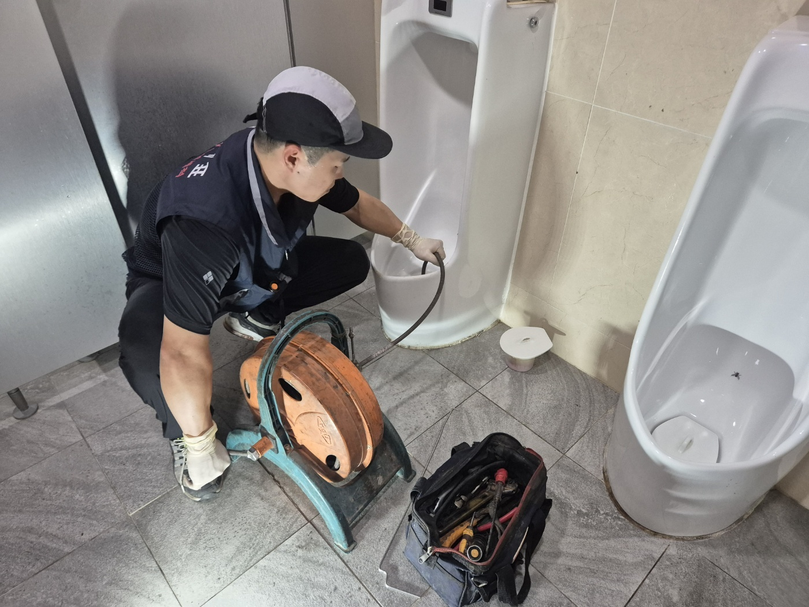

안녕하세요.. 고고고 설비입니다.. 최근 평택, 안성, 천안, 아산 여러 상가에서 소변기막힘 신고를 받고 다녀온 현장들을 모아봤습니다. 지역은 다 달랐지만 신기하게도 막힌 원인과 해결 과정은 거의 비슷해서, 한 번에 정리해서 보여드리는 게 더 도움이 될 것 같았어요.
여러 현장을 다녀보면 소변기 위에 "사용금지" 종이가 붙어있고 비닐로 감싸둔 모습을 자주 보게 됩니다. 물이 넘칠 정도로 막혀서 급하게 손님들 출입을 막아둔 상태였어요. 사장님들 입장에서는 화장실 하나가 막혀도 영업에 신경 쓰일 수밖에 없더라고요.

배관 연결부를 분리해보면 안쪽에 찌든 이물질이 층층이 쌓여있는 경우가 많습니다. 소변기는 구조상 배관이 좁고 꺾인 부분이 많아서, 물때와 이물질이 한번 쌓이기 시작하면 빠르게 막히는 편이에요. 여러 사람이 함께 쓰는 상가 화장실일수록 이런 현상이 더 자주 나타났습니다.

전동 와이어 케이블을 배관 안쪽으로 밀어 넣어 막힌 부분을 반복해서 뚫어줍니다. 한 번에 시원하게 뚫리기보다는 케이블을 넣었다 빼기를 여러 번 반복해야 하는 경우가 많았어요. 작업을 마치면 물이 다시 정상적으로 빠지는 걸 확인하고 "사용금지" 표시를 떼어드립니다.

다른 상가에서도 같은 이유로 소변기 사용이 중단된 경우가 있었습니다. "고장, 사용금지, 좌변기 사용 부탁드려요"라고 써 붙여둔 걸 보면 손님들 불편이 얼마나 컸을지 짐작이 갑니다. 한 상가는 소변기 하나가 막혔을 뿐인데 좌변기 앞에 줄이 생길 정도였어요.



어느 현장이든 순서는 같습니다. 배관 상태를 확인하고, 전동 와이어로 막힘을 제거하고, 물을 내려 정상 작동을 확인하는 거죠. 지역과 업종은 달라도 원인은 늘 비슷해서, 경험이 쌓일수록 확인 순서도 자연스레 손에 익더라고요.

소변기는 특성상 막힘이 반복되기 쉬운 만큼, 사용금지 표시가 붙기 전에 정기적으로 점검받으시는 걸 권해드립니다. 특히 유동인구가 많은 상가는 조금이라도 배수가 느려진다 싶으면 미리 연락 주시는 게 큰 불편을 막는 지름길입니다.
고고고 설비는 주택, 아파트, 원룸, 상가, 공장의 생활 하수 오수 배관을 관리해 주는 업체입니다. 고고고 설비에 전화 주시면 친절상담 정확한 진단 확실한 해결로 보답해 드리겠습니다!!